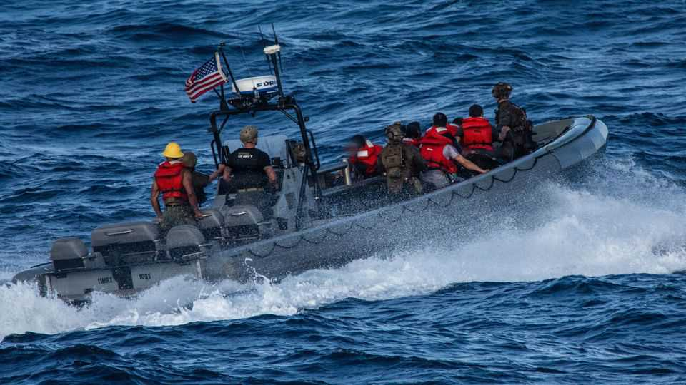

The pointless war on “narco-terrorists” is growing more collaborative
America is working with Latin American governments to target gangs on land and at sea

Oct 1st 2026
The grainy video shows a fishing boat bobbing off the coast of Ecuador. A craft ferrying American marines pulls up beside it. They board the ship and bundle off the crew, before the fishing vessel explodes in a burst of white. The video, released on September 16th, appears to show a new type of operation: hitting large fishing boats the Pentagon says provide fuel to smaller vessels running drugs—and sparing the lives of those on board. It was the eighth such operation since late August.
For over a year America’s armed forces have pulverised small drug-smuggling boats in the Caribbean and Pacific. But in recent months the Trump administration’s war against what it inaccurately calls “narco-terrorists” has become broader and more collaborative. Operations hit not only traffickers at sea but also their logistics networks, as well as a rising number of targets on land. And the attack off the coast of Ecuador, unlike earlier, unilateral boat strikes, was undertaken with the involvement of the Ecuadorean government, part of an emerging regional coalition going all-in on Donald Trump’s drug war.
America’s boat-bombing began haphazardly, run by a small team hastily assembled by the secretary of war, Pete Hegseth. The goal was to undermine Nicolás Maduro, Venezuela’s then-dictator, as well as to showcase Mr Trump’s vow to smash drug gangs. Legal experts condemned the strikes as illegal summary executions of people merely suspected of committing a non-capital offence. The head of Southern Command (SOUTHCOM), which runs operations in Latin America, resigned. So far, America has carried out roughly 70 confirmed attacks, killing at least 230 people.
Under SOUTHCOM’s newish boss, General Francis Donovan, the tempo of deadly strikes has recently slowed and there is new emphasis on trying to choke drug-supply chains. Refuelling vessels, for example, are harder to replace than smaller boats, and therefore have a bigger impact on smuggling routes, says a former Pentagon official. Other targets include ports or clandestine airfields.
The Pentagon is also co-operating more with neighbours. In August SOUTHCOM unveiled a new task-force to co-ordinate operations with the 18 countries of the Americas Counter-Cartel Coalition. On a visit to Colombia, Ecuador and Peru, Marco Rubio, Mr Trump’s secretary of state, promised that America would not strike targets without allied approval.
Consider Ecuador, which is grappling with gangs and a high murder rate; its president, Daniel Noboa, was the first in the region to launch joint military operations with America, in March. Since then, American special forces have helped Ecuadoreans blast suspected drug-traffickers along the country’s border with Colombia, and Ecuador’s army has hitched rides on American ships on missions at sea. On September 24th around 50 American marines joined Ecuadorean police in raids against a drugs gang along the country’s west coast. Mr Rubio has praised Ecuador as the administration’s “most involved and aggressive partner” in fighting cartels. Honduras, Colombia and Guatemala have all recently signed similar agreements to conduct joint operations.
America is providing other support, too. On September 15th the State Department reallocated around $50m from Europe and the Middle East to help Latin American countries buy American kit. The Pentagon is lending MQ-9 attack drones to Colombia and setting up a new regional drone initiative to share intelligence. Colombia recently used American intelligence to kill a prominent smuggler.
Mexico remains an outlier, declining to join the counter-cartel coalition despite Mr Trump’s relentless haranguing. Though the two neighbours still co-operate, Mexican officials worry that American security agencies operate in the country with little oversight. That impression was reinforced in April, after two CIA agents died in a car crash during an operation targeting a suspected drug lab, which the Mexican government did not know about. American officials have refused to rule out unilateral action. “That threat will have to be confronted,” Mr Rubio warned on September 9th, “one way or the other.”
Besides looking tough, the campaign achieves little. Mr Trump claims to have stopped “98.2% of Drugs coming into the U.S. by Ocean or Sea”. Yet a government assessment in July found no change in the availability of cocaine in America since the campaign began. Seizures at borders and ports rose in 2026, but narcos have adapted by moving more drugs overland. Even if supply is constrained, history and economics suggest that prices will rise, and smugglers will find a way. ■
Stay on top of American politics with The US in brief, our daily newsletter with fast analysis of the most important political news, and Checks and Balance, a weekly note that examines the state of American democracy and the issues that matter to voters.